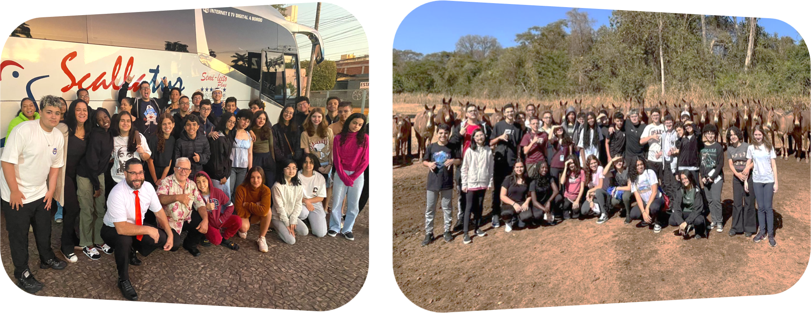

- Programa de Férias
- JBS
- JBJ
Goiânia — Goiás
Imersão em Cadeia Agroindustrial
Goiânia foi a minha segunda viagem durante o Programa de Férias do Germinare Business. Lá conheci a fábrica de bovinos da JBS e (a parte mais legal) a JBJ, empresa que atua diretamente com os cuidados dos animais.
Localidade: GOGerminare Business